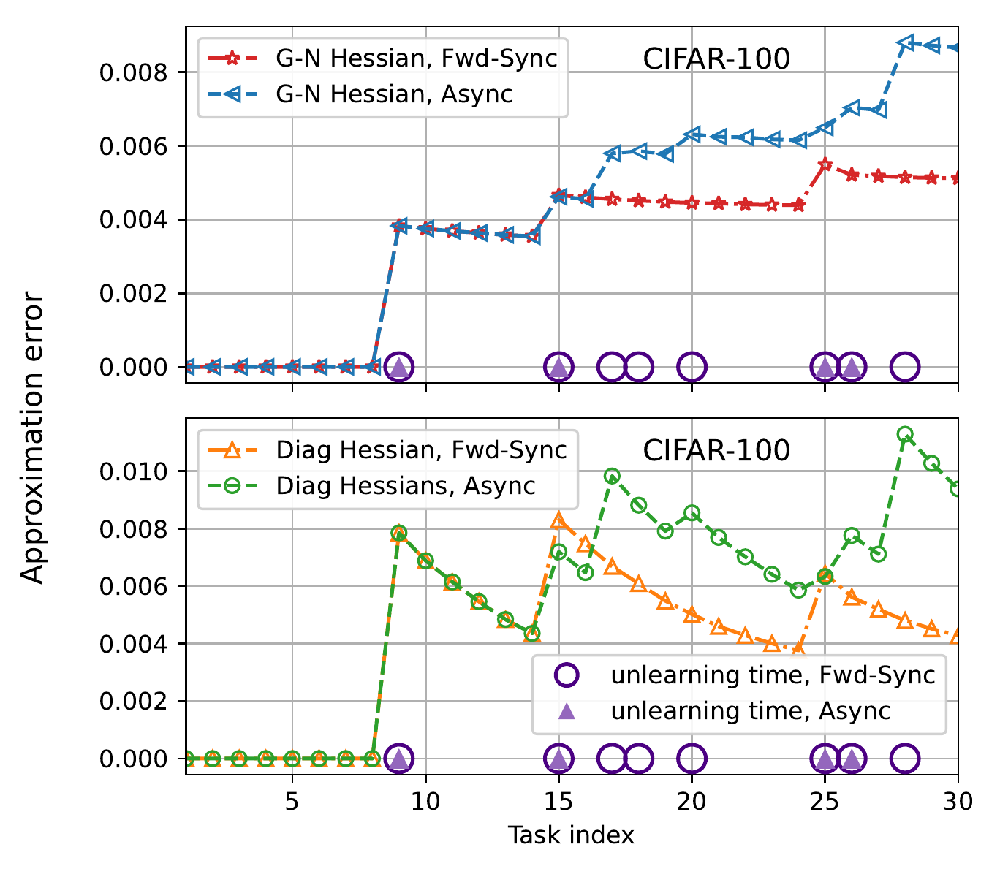
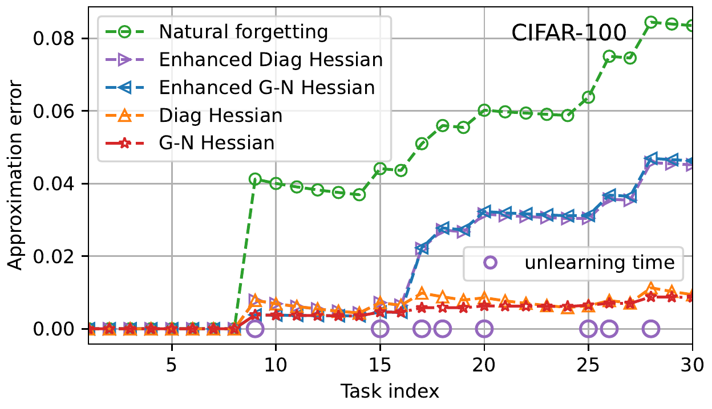
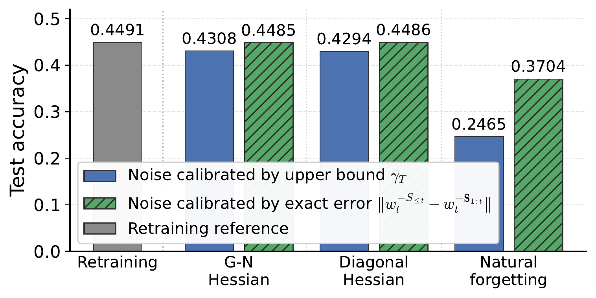

Two papers accepted to ICML 2026 on certified unlearning theory in continual learning and defense against poisoning attacks.
Ph.D. Candidate | Trustworthy Machine Learning
Yiting Hu
Ph.D. candidate in Engineering Systems and Design at Singapore University of Technology and Design, and visiting Ph.D. student at HKUST(GZ).
I study reliable machine learning systems that adapt over time while remaining robust, auditable, and able to remove data influence when needed. My current work focuses on continual learning, certified machine unlearning, data poisoning, and trustworthy AI for IoT and cyber-physical systems.
News
Recent Updates
Visiting Ph.D. student at HKUST(GZ), Information Hub, Internet of Things Thrust.
Paper on truthful mechanisms for linear bandit games accepted to AAMAS 2025.
Research
Research Themes
My research connects theoretical guarantees with learning systems that operate in sequential, interactive, and adversarial environments.
Continual Learning
Learning from task streams while controlling forgetting, regularization effects, and long-horizon error propagation.
Machine Unlearning
Certified removal of task or data influence in models that have already adapted across a learning history.
Trustworthy AI
Robustness, security, privacy, and human-facing governance for learning systems deployed in connected environments.
Publications
Selected Publications
A compact list is shown here; the full BibTeX file is available above.
Theory of Continual Learning Against Data Poisoning Attacks
A theoretical framework for robust continual learning under poisoning attacks, formulated through online minimax analysis.
The Forgetting-Retention Dilemma: Certified Unlearning Theory in Continual Learning
Certified unlearning theory for continual learning, characterizing the tension between retaining useful knowledge and removing requested influence.
Truthful Mechanisms for Linear Bandit Games with Private Contexts
Mechanism design for linear bandit games where agents hold private contextual information.
Theory for Group-Robust Continual Learning
Manuscript on robustness guarantees for continual learning across groups and evolving task streams.
Human-in-the-Loop Learning Through Communication Restriction
Learning and incentive questions when human feedback is shaped by limited communication channels.
Projects
Selected Work

Certified Unlearning
Forgetting-Retention Trade-offs
Analysis and experiments on how unlearning order changes approximation error in continual learning systems.

Sequential Models
History-Aware Model Updates
Studying how information from older tasks propagates through later model states and how that affects deletion requests.

Trustworthy Systems
Efficient Guarantees
Designing resource-aware methods that balance storage, performance, and certified behavior over time.
Profile
Education and Experience
Singapore University of Technology and Design
Ph.D. candidate, Engineering Systems and Design.
HKUST(GZ)
Visiting Ph.D. student, Information Hub, Internet of Things Thrust.
Beihang University
M.Eng. in Electronic Information Engineering.
Beihang University
B.S. in Chemistry.
Contact
Get in Touch
I am interested in collaborations around trustworthy learning, continual adaptation, certified unlearning, and AI for connected systems.